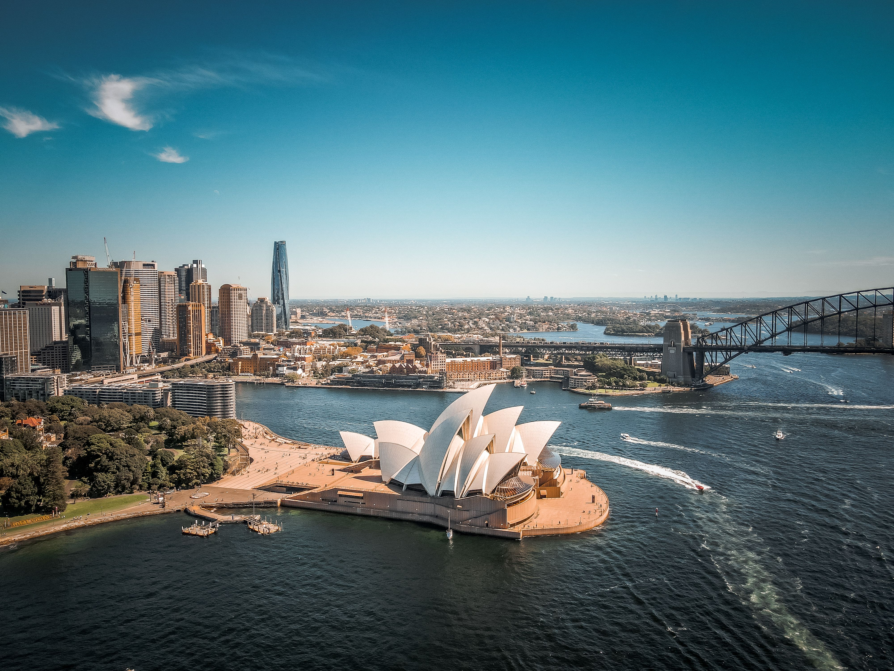

Australia is one of the most preferred study destinations for Nepali students because of its globally recognized education system, multicultural society, and strong post-study work opportunities. Australian institutions focus on practical learning, industry exposure, and career development, helping students become highly competitive in the global job market.
With flexible academic pathways, transparent visa procedures, and strong student protection policies, Australia remains an excellent destination for undergraduate, postgraduate, and vocational studies.
Minimum GPA of 2.8 or above in SEE and +2 (Grade 12) or equivalent qualification.
IELTS or PTE scores required based on program level. Health programs require a valid CEE certificate.
Verifiable income sources required. Estimated annual income shown below per program type.
Education loans accepted from recognized Nepali A-Class banks. Typical loan limits apply per program.
Australia offers world-class programs across diverse disciplines. Here are the most popular study fields chosen by Nepali students.
Our step-by-step guidance makes your Australia student visa application simple and stress-free.
Meet our Australia specialists to discuss your academic background, goals, and the best-fit programs and institutions.
Prepare for IELTS or PTE with our in-house training. We ensure you meet the required scores for your chosen program before applying.
We prepare your SOP, LORs, and complete application documents, then submit to your shortlisted Australian institutions on your behalf.
After receiving your Confirmation of Enrolment (CoE), we prepare and lodge your Australian student visa application with all required documents.
We provide pre-departure orientation covering accommodation, arrival, transport, and student life in Australia so you land fully prepared.
Australia offers one of the world's most generous post-study work rights and clear pathways to permanent residency for skilled graduates.
After graduating, students can apply for the Temporary Graduate visa (Subclass 485) to work in Australia for 2–6 years depending on the qualification level and study location.
Australian student visa (Subclass 500) allows students to work while studying, helping cover living costs and gain local work experience.
Australia's skilled migration program offers clear PR pathways for international graduates in high-demand occupations through skilled points-based visas.
Australia is safe, diverse, and student-friendly. Monthly living costs vary by city, with Melbourne and Sydney being more expensive than regional areas.
Common questions Nepali students ask about studying in Australia.
A minimum GPA of 2.8 or above in SEE and Grade 12 (or equivalent) is generally required. Some programs or institutions may have higher GPA requirements. Our counsellors will assess your academic background and match you with universities where you have the best chance of admission.
The CEE (Common Entrance Examination) certificate is a mandatory qualification for applicants applying to health and medical-related programs in Australia — including Nursing, Pharmacy, Physiotherapy, Dental Surgery, and Medicine. It verifies that your academic background meets Australian health program standards.
Yes. Education loans from recognized Nepali A-Class banks are accepted. Typical loan limits are: up to NPR 45 lakhs for VET programs, NPR 55–65 lakhs for bachelor's programs, and up to NPR 55 lakhs for master's programs. Sukriti Global can guide you through the loan documentation process.
Students on a Subclass 500 student visa can work up to 48 hours per fortnight during their course and unlimited hours during scheduled course breaks. Australia's minimum wage is approximately AUD $23.23 per hour, making part-time work a meaningful supplement to living costs.
Yes. Australia's Temporary Graduate Visa (Subclass 485) allows graduates to work for 2–6 years after completing their degree. Depending on your occupation and state, you may also be eligible to apply for permanent residency through the Skilled Independent (189), Skilled Nominated (190), or Regional (491) visa pathways.
The Australia student visa (Subclass 500) allows you to study full-time in Australia. Processing times are typically 4–8 weeks but can vary. Sukriti Global prepares your complete visa file — including the Confirmation of Enrolment (CoE), financial documents, GTE statement, and health insurance — to maximize your chances of approval.
Get expert guidance from our counselors who specialize in Australia student admissions.
Book Free Counselling Session


.jpg)